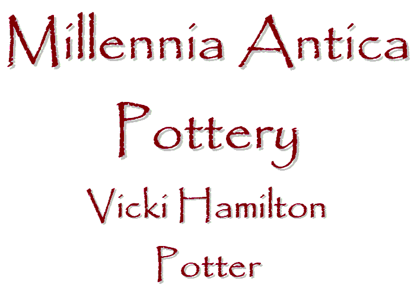

This is a version of the sign, with client-side image-mapping, produced using Paint Shop Pro 7. Because the home-page version is scaled, I used the generated HTML here to manually produce the proper HTML on the site's default page. I also corrected the links so that they work from this location of the experimental page. -- orcmid
created 2002-08-04-18:24 -0700 (pst) by orcmid
$$Author: Vicki $
$$Date: 03-08-10 12:00 $
$$Revision: 4 $